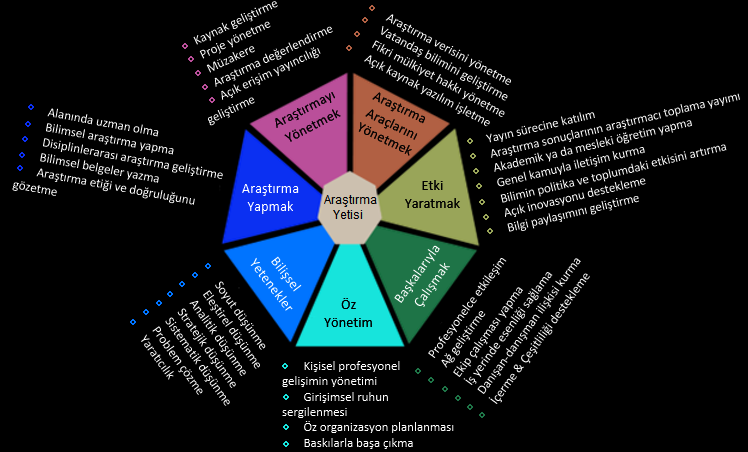

Conventional training (graduate research and similar programs in undergraduate) unfortunately does not provide many skills, critical in both academic and other sectors. As a result, a European Competence Framework for Researchers was developed after several extensive works and expert opinions.

Currently, FIRE Araştırma Eğitim Ltd. Şti. has two different categories in Research(er) Enhancement.
Researcher Training (mostly based on European Competence Framework for Researchers)
ResearchComp is an excellent framework for the career development and skill improvement of current and prospective researchers.


- The original EC Office of Publication document for ResearchComp
- The original independent expert report for ResearchComp
FIRE Araştırma Eğitim Ltd. Şti. devises a training program for researchers and researcher candidates. It will be based on ResearchComp described above, and additional specific requirements decided after personal communications and expert judgments. More information will be provided as soon as it will be complete and ready for implementation.
Research Enhancement
Research Enhancement will take place mainly in two ways. The first one is the provision of funds.

The second one is teaching/supporting research studies with additional data, code, method, literature review, study, insight, and collaboration, and facilitating their research processes.

One demo application of the latter case can be seen below:
Data of Surface Water Quality in TürkiyeIn this case, scattered and hard-to-reach surface water quality data from studies conducted in Türkiye was collected in Tables with important metadata regarding what is available. That public document is expected to give a direction/idea to the researchers interested in this topic, especially for Türkiye case, where unfortunately data availability is not sufficient.